Chapter 3 Data exploration
I want to know more about the pollution in Barcelona and so in this chapter I will try to get more insights, and see what I discover from the data. There are multiple questions I’m curious about and I am going to try find answers by using some additional datasets like weather, health and calendar dates. You can find the R script in here
3.1 General exploration
Let’s start by loading the data for NO2 and PM10 pollutants in Eixample from 2014 to 2018. Please load files “Eixample_NO2_2014_2018.csv” and “Eixample_PM10.csv”.
library(readr)
library(dplyr)
library(tidyr)
library(purrr)
library(lubridate)
library(ggplot2)
library(stringr)
library(knitr)
library(xts)
library(zoo)
library(gridExtra)
library(fpp2)
library(RcppRoll)
library(kableExtra)
library(imputeTS)
library(ggfortify)
library(urca)
library(forecast)
library(hydroTSM)
library(tidyquant)
library(reshape)
library(ggpubr)
library(openair)
library(data.table)
require('data.table')
library(robust)
library(corrplot)
Eixample_NO2 <- read_csv('/Users/ione/Desktop/Project_AIR/data/Eixample_NO2_2014_2018.csv')
Eixample_PM10 <- read_csv('/Users/ione/Desktop/Project_AIR/data/Eixample_PM10.csv')I will rename columns for NO2 and PM10.
Eixample_NO2 <- Eixample_NO2 %>% dplyr::rename(NO2='imp_2014_2018_NO2_Eixample_intp')
Eixample_PM10 <- Eixample_PM10 %>% dplyr::rename(PM10='imp_2014_2018_PM10_Eixample_intp')I am going to calculate the daily value for the average, median, min and max of both pollutants NO2 and PM10 in Eixample from 2014 to 2018.
stat_fun <- function(x) c(min = min(x), max = max(x), mean = mean(x), median = median(x))
Eixample_NO2_day <- Eixample_NO2 %>%
tq_transmute(select = NO2,
mutate_fun = apply.daily,
FUN = stat_fun)
summary(Eixample_NO2_day)## dt min max
## Min. :2014-01-01 23:00:00 Min. : 9.00 Min. : 25.00
## 1st Qu.:2015-04-03 11:00:00 1st Qu.: 26.00 1st Qu.: 71.00
## Median :2016-07-02 23:00:00 Median : 34.00 Median : 86.00
## Mean :2016-07-02 22:59:14 Mean : 35.54 Mean : 87.97
## 3rd Qu.:2017-10-02 11:00:00 3rd Qu.: 43.00 3rd Qu.:102.00
## Max. :2019-01-01 00:00:00 Max. :127.00 Max. :200.00
## mean median
## Min. : 18.27 Min. : 17.60
## 1st Qu.: 46.32 1st Qu.: 45.23
## Median : 58.58 Median : 57.50
## Mean : 59.74 Mean : 59.12
## 3rd Qu.: 70.66 3rd Qu.: 70.30
## Max. :129.75 Max. :139.75Eixample_PM10_day <- Eixample_PM10 %>%
tq_transmute(select = PM10,
mutate_fun = apply.daily,
FUN = stat_fun)
summary(Eixample_PM10_day)## dt min max
## Min. :2014-01-01 23:00:00 Min. : 1.00 Min. : 12.17
## 1st Qu.:2015-04-03 11:00:00 1st Qu.:13.00 1st Qu.: 34.00
## Median :2016-07-02 23:00:00 Median :18.00 Median : 44.00
## Mean :2016-07-02 22:59:14 Mean :18.35 Mean : 50.38
## 3rd Qu.:2017-10-02 11:00:00 3rd Qu.:23.00 3rd Qu.: 57.00
## Max. :2019-01-01 00:00:00 Max. :77.16 Max. :1167.00
## mean median
## Min. : 6.271 Min. : 3.821
## 1st Qu.: 22.896 1st Qu.:22.000
## Median : 28.854 Median :28.100
## Mean : 30.921 Mean :29.623
## 3rd Qu.: 36.281 3rd Qu.:35.200
## Max. :302.854 Max. :99.509Let’s plot the daily average of NO2 in Eixample:
ggplot(Eixample_NO2_day, aes(x = as.Date(dt), y = mean)) +
geom_line(alpha = 0.5) +
geom_smooth(color = "grey", alpha = 0.2) +
scale_x_date(breaks='1 year') +
labs( x = "Time", y = "NO2 (µg/m3)", title = " Eixample - NO2 (µg/m3) daily average")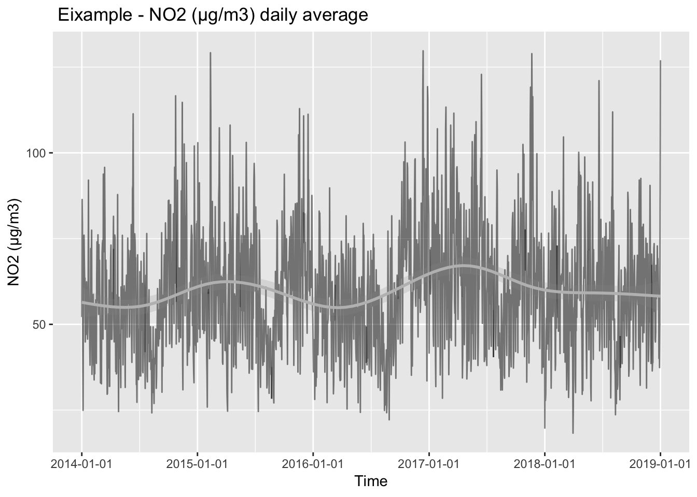
The trend is not negative, even slightly positive, which means the NO2 pollution has not improved in the last five years. Seasonality seems to be yearly.
Plot for daily average of PM10:
ggplot(Eixample_PM10_day, aes(x = as.Date(dt), y = mean)) +
geom_line(alpha = 0.5) +
geom_smooth(color = "grey", alpha = 0.2) +
scale_x_date(breaks='1 year') +
labs( x = "Time", y = "PM10 (µg/m3)", title = "Eixample - PM10 (µg/m3) daily average")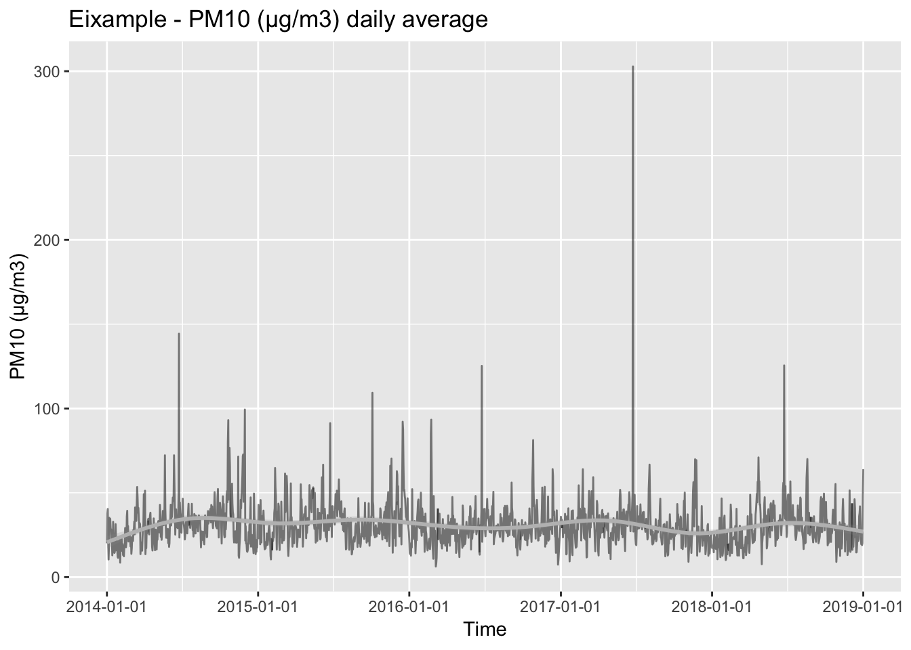
There are many outliers and I will look at them in a moment. The trend also seems to be quite flat, PM10 concentrations have not improved much in the last five years.
Monthly median, average, max and minimum for both NO2 and PM10.
Eixample_NO2_month <- Eixample_NO2 %>%
tq_transmute(select = NO2,
mutate_fun = apply.monthly,
FUN = stat_fun)
summary(Eixample_NO2_month)## dt min max
## Min. :2014-01-31 23:00:00 Min. : 9.00 Min. :104.0
## 1st Qu.:2015-04-30 23:00:00 1st Qu.: 13.00 1st Qu.:125.0
## Median :2016-07-31 23:00:00 Median : 16.00 Median :136.0
## Mean :2016-07-31 04:31:28 Mean : 17.72 Mean :140.1
## 3rd Qu.:2017-10-31 23:00:00 3rd Qu.: 18.00 3rd Qu.:155.0
## Max. :2019-01-01 00:00:00 Max. :127.00 Max. :200.0
## mean median
## Min. : 40.92 Min. : 38.50
## 1st Qu.: 54.50 1st Qu.: 52.30
## Median : 59.13 Median : 57.00
## Mean : 60.83 Mean : 58.57
## 3rd Qu.: 65.76 3rd Qu.: 63.50
## Max. :127.00 Max. :127.00Eixample_PM10_month <- Eixample_PM10 %>%
tq_transmute(select = PM10,
mutate_fun = apply.monthly,
FUN = stat_fun)
summary(Eixample_PM10_month)## dt min max
## Min. :2014-01-31 23:00:00 Min. : 1.00 Min. : 51.0
## 1st Qu.:2015-04-30 23:00:00 1st Qu.: 4.00 1st Qu.: 79.0
## Median :2016-07-31 23:00:00 Median : 6.00 Median : 98.0
## Mean :2016-07-31 04:31:28 Mean : 7.41 Mean : 151.4
## 3rd Qu.:2017-10-31 23:00:00 3rd Qu.: 9.00 3rd Qu.: 127.0
## Max. :2019-01-01 00:00:00 Max. :64.00 Max. :1167.0
## mean median
## Min. :20.13 Min. :18.70
## 1st Qu.:27.43 1st Qu.:25.00
## Median :30.80 Median :28.00
## Mean :31.44 Mean :28.59
## 3rd Qu.:33.96 3rd Qu.:30.90
## Max. :64.00 Max. :64.00I will plot the monthly values.
ggplot( data =Eixample_NO2_month , aes(x = as.Date(dt), y = mean)) +
geom_line(alpha = 0.5) +
labs( x = "Time", y = "NO2 (µg/m3)", title = "NO2(µg/m3) - Eixample NO2 monthly avg")+
geom_smooth(color = "grey", alpha = 0.2) +
scale_x_date(breaks='6 months', date_labels = "%m-%Y")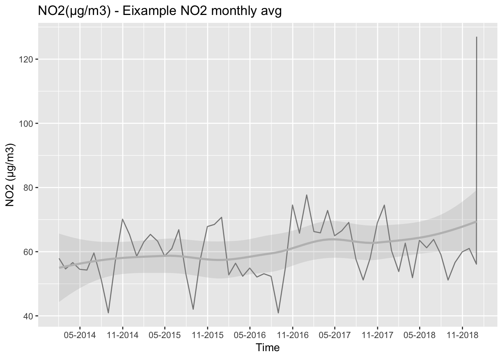
I see yearly seasonality and positive trend for NO2.
ggplot(data =Eixample_PM10_month ,aes(x = as.Date(dt), y = mean)) +
geom_line(alpha = 0.5) +
labs( x = "Time", y = "PM10 (µg/m3)", title = "Eixample PM10 monthly avg")+
geom_smooth(color = "grey", alpha = 0.2) +
scale_x_date(breaks='6 months', date_labels = "%m-%Y")
For PM10 the seasonality is not that evident, and there is not a clear trend neither.
Yearly mean, median, min and max for both PM10 and NO2.
Eixample_NO2_year <- Eixample_NO2 %>%
tq_transmute(select = NO2,
mutate_fun = apply.yearly,
FUN = stat_fun)
head(Eixample_NO2_year,5)## # A tibble: 5 x 5
## dt min max mean median
## <dttm> <dbl> <dbl> <dbl> <dbl>
## 1 2014-12-31 23:00:00 9 159 56.8 54
## 2 2015-12-31 23:00:00 9 178 61.4 58.5
## 3 2016-12-31 23:00:00 11 200 57.3 55
## 4 2017-12-31 23:00:00 13 187 64.6 61.3
## 5 2018-12-31 23:00:00 11 197 58.3 56We can now see if NO2 is complying with EU air quality regulations:
- Hourly limit for NO2 of 200 µg/m3 (18 Permitted exceedences each year).
- Average yearly limit of 40 µg/m3.
There is only one time that NO2 reching 200 µg/m3, so NO2 levels in Barcelona are complying with hourly limit.
But the average yearly limit of 40 µg/m3 has not been met in any year for the last five years, which is a violation of EU air quality regulations.
Eixample_PM10_year <- Eixample_PM10 %>%
tq_transmute(select = PM10,
mutate_fun = apply.yearly,
FUN = stat_fun)
head(Eixample_PM10_year,5)## # A tibble: 5 x 5
## dt min max mean median
## <dttm> <dbl> <dbl> <dbl> <dbl>
## 1 2014-12-31 23:00:00 4 471 31.5 28.6
## 2 2015-12-31 23:00:00 1 536 33.5 30
## 3 2016-12-31 23:00:00 1 458 29.6 27
## 4 2017-12-31 23:00:00 1 1167 30.7 28
## 5 2018-12-31 23:00:00 1 431 29.1 26.4For PM10, the EU air quality regulations state that:
- Daily concentration for PM10 of 50 µg/m3 (35 Permitted exceedences each year).
- Average yearly limit of 40 µg/m3.
PM10 average yearly limits are met every year, but I will check if the daily PM10 concentrations meet the EU air quality limits.
Eixample_PM10_day_2014 <- Eixample_PM10_day %>% filter( dt <= "2014-12-31")
Eixample_PM10_day_2015 <- Eixample_PM10_day %>% filter( dt >= "2015-01-01" & dt <= "2015-12-31")
Eixample_PM10_day_2016 <- Eixample_PM10_day %>% filter( dt >= "2016-01-01" & dt <= "2016-12-31")
Eixample_PM10_day_2017 <- Eixample_PM10_day %>% filter( dt >= "2017-01-01" & dt <= "2017-12-31")
Eixample_PM10_day_2018 <- Eixample_PM10_day %>% filter( dt >= "2018-01-01" & dt <= "2018-12-31")
Eixample_PM10_day_2014 %>% summarize(n_cases = sum(Eixample_PM10_day_2014$mean >= 50))## # A tibble: 1 x 1
## n_cases
## <int>
## 1 22Eixample_PM10_day_2015 %>% summarize(n_cases = sum(Eixample_PM10_day_2015$mean >= 50))## # A tibble: 1 x 1
## n_cases
## <int>
## 1 33Eixample_PM10_day_2016 %>% summarize(n_cases = sum(Eixample_PM10_day_2016$mean >= 50))## # A tibble: 1 x 1
## n_cases
## <int>
## 1 16Eixample_PM10_day_2017 %>% summarize(n_cases = sum(Eixample_PM10_day_2017$mean >= 50))## # A tibble: 1 x 1
## n_cases
## <int>
## 1 20Eixample_PM10_day_2018 %>% summarize(n_cases = sum(Eixample_PM10_day_2018$mean >= 50))## # A tibble: 1 x 1
## n_cases
## <int>
## 1 16There is no year with more than 35 cases with concentrations of PM10 higher than 50 µg/m3. Year 2015 had 33 cases but it’s still complying the regulations.
I am now going to analyze the outliers with extremely high PM10 values.
outliers <- Eixample_PM10_day[order(Eixample_PM10_day$max, decreasing = TRUE),]
outliers## # A tibble: 1,827 x 5
## dt min max mean median
## <dttm> <dbl> <dbl> <dbl> <dbl>
## 1 2017-06-24 23:00:00 20 1167 303. 54
## 2 2015-06-07 23:00:00 21 536 66.7 27
## 3 2015-10-03 23:00:00 1 509 60.5 28.2
## 4 2014-06-24 23:00:00 9 471 144. 56
## 5 2016-06-24 23:00:00 15 458 125. 43
## 6 2018-06-24 23:00:00 18 431 126. 41
## 7 2015-10-04 23:00:00 14 405 109. 28
## 8 2015-06-24 23:00:00 19 314 91.3 37
## 9 2018-06-23 23:00:00 13 312 43.1 25.8
## 10 2014-11-30 23:00:00 8 269 99.4 86.4
## # … with 1,817 more rowsIf we see the list of the maximum values, on the 24th of June, 2017 the maximum concentration measured was of 1167 µg/m3, when the legal limit daily concentration of PM10 is 50 µg/m3. But positions 4,5,6,and 8, are also on the 24th June, which is the day of Sant Joan.
Sant Joan is often described by Catalans as the ‘Nit del Foc’ - meaning the ‘Night of Fire’. The main aspect to the celebrations is fireworks, bonfires and firecrackers. Fireworks cause extensive air pollution in a short amount of time, leaving metal particles, dangerous toxins, harmful chemicals and smoke in the air for hours and days.
Doing some research on this, I have surprisingly found out that fireworks have been banned in China for Lunar New Year celebrations to avoid higher pollution. Also in India, firecrackers have been partially banned for Diwali hindu celebrations.
Second highest value in the list, corresponds to 7th June 2015. This is when Barcelona FC won its 5th Champions League final, and celebrations surely included fireworks and firecrackers.
3.2 Weather and pollution
What is the relationship between weather and pollutants NO2 and PM10? How are pollutants affected by different weather components? Let’s try to answer these questions.
Let’s load the data from Raval- zoo in Barcelona (EMA = X4). I’m going to use the weather data from Raval to compare it with pollution measured in Eixample due to proximity between both stations. Please load file “Jlerchundi_X4_14-19.csv”.
Weather_bcn <- read_csv('/Users/ione/Desktop/Project_AIR/data/Jlerchundi_X4_14-19.csv')Data column is in format “1/1/2014 1:00”, and it’s a character, so I’ll change it to be same as dt in the pollution datasets and be able to join the data.
Weather_bcn <- Weather_bcn %>% dplyr::rename(dt="DATA (T.U.)",
wd = "DV10",
ws = "VV10")
Weather_bcn$dt <- parse_date_time(Weather_bcn$dt, "dmy HM", truncated = 3)
head(Weather_bcn)## # A tibble: 6 x 12
## EMA dt T Tx Tn HR PPT P ws wd
## <chr> <dttm> <dbl> <dbl> <dbl> <dbl> <dbl> <dbl> <dbl> <dbl>
## 1 X4 2014-01-01 00:00:00 10.1 10.9 9.6 56 0 1013. 2.8 324
## 2 X4 2014-01-01 01:00:00 9.8 10 9.7 58 0 1013. 4.1 316
## 3 X4 2014-01-01 02:00:00 9.9 10.1 9.6 58 0 1014. 3.4 301
## 4 X4 2014-01-01 03:00:00 9.4 10 8.3 60 0 1013. 1.8 58
## 5 X4 2014-01-01 04:00:00 8.4 8.9 7.9 65 0 1013. 1.2 333
## 6 X4 2014-01-01 05:00:00 8.7 9 8.2 65 0 1013. 1.1 21
## # … with 2 more variables: VVx10 <dbl>, DVVx10 <dbl>Now I will do the join between the weather and pollution data:
Eixample_NO2_weather <- merge(Eixample_NO2,Weather_bcn,by="dt" )
summary(Eixample_NO2_weather)## dt pollutant station_code
## Min. :2014-01-01 01:00:00 Length:43848 Min. :43
## 1st Qu.:2015-04-02 18:45:00 Class :character 1st Qu.:43
## Median :2016-07-02 12:30:00 Mode :character Median :43
## Mean :2016-07-02 07:41:31 Mean :43
## 3rd Qu.:2017-10-02 06:15:00 3rd Qu.:43
## Max. :2019-01-01 00:00:00 Max. :43
##
## latitude longitude unit year
## Min. :41.39 Min. :2.154 Length:43848 Min. :2014
## 1st Qu.:41.39 1st Qu.:2.154 Class :character 1st Qu.:2015
## Median :41.39 Median :2.154 Mode :character Median :2016
## Mean :41.39 Mean :2.154 Mean :2016
## 3rd Qu.:41.39 3rd Qu.:2.154 3rd Qu.:2017
## Max. :41.39 Max. :2.154 Max. :2018
##
## month day value station_alias
## Min. : 1.000 Min. : 1.00 Min. : 9.0 Length:43848
## 1st Qu.: 4.000 1st Qu.: 8.00 1st Qu.: 42.0 Class :character
## Median : 7.000 Median :16.00 Median : 57.0 Mode :character
## Mean : 6.527 Mean :15.74 Mean : 59.2
## 3rd Qu.:10.000 3rd Qu.:23.00 3rd Qu.: 74.0
## Max. :12.000 Max. :31.00 Max. :200.0
## NA's :17099
## NO2 EMA T Tx
## Min. : 9.0 Length:43848 Min. : 1.10 Min. : 1.10
## 1st Qu.: 42.5 Class :character 1st Qu.:13.40 1st Qu.:13.70
## Median : 57.0 Mode :character Median :17.80 Median :18.00
## Mean : 59.7 Mean :18.19 Mean :18.46
## 3rd Qu.: 73.8 3rd Qu.:23.10 3rd Qu.:23.40
## Max. :200.0 Max. :35.70 Max. :36.90
##
## Tn HR PPT P
## Min. : 1.00 Min. : 6.0 Min. : 0.00000 Min. : 981.3
## 1st Qu.:13.20 1st Qu.: 54.0 1st Qu.: 0.00000 1st Qu.:1009.0
## Median :17.50 Median : 65.0 Median : 0.00000 Median :1012.8
## Mean :17.93 Mean : 63.7 Mean : 0.03472 Mean :1012.7
## 3rd Qu.:22.90 3rd Qu.: 74.0 3rd Qu.: 0.00000 3rd Qu.:1016.4
## Max. :35.20 Max. :100.0 Max. :58.70000 Max. :1036.2
##
## ws wd VVx10 DVVx10
## Min. : 0.000 Min. : 0.0 Min. : 0.000 Min. : 0.0
## 1st Qu.: 1.100 1st Qu.: 96.0 1st Qu.: 2.600 1st Qu.: 94.0
## Median : 1.800 Median :205.0 Median : 4.000 Median :207.0
## Mean : 2.021 Mean :186.7 Mean : 4.478 Mean :189.5
## 3rd Qu.: 2.700 3rd Qu.:264.0 3rd Qu.: 5.800 3rd Qu.:270.0
## Max. :10.400 Max. :359.0 Max. :20.900 Max. :359.0
## NA's :21 NA's :22 NA's :22 NA's :22Eixample_PM10_weather <- merge(Eixample_PM10,Weather_bcn,by="dt" )
summary(Eixample_PM10_weather)## dt pollutant station_code
## Min. :2014-01-01 01:00:00 Length:43848 Min. :43
## 1st Qu.:2015-04-02 18:45:00 Class :character 1st Qu.:43
## Median :2016-07-02 12:30:00 Mode :character Median :43
## Mean :2016-07-02 07:41:31 Mean :43
## 3rd Qu.:2017-10-02 06:15:00 3rd Qu.:43
## Max. :2019-01-01 00:00:00 Max. :43
##
## latitude longitude unit year
## Min. :41.39 Min. :2.154 Length:43848 Min. :2014
## 1st Qu.:41.39 1st Qu.:2.154 Class :character 1st Qu.:2015
## Median :41.39 Median :2.154 Mode :character Median :2016
## Mean :41.39 Mean :2.154 Mean :2016
## 3rd Qu.:41.39 3rd Qu.:2.154 3rd Qu.:2017
## Max. :41.39 Max. :2.154 Max. :2018
##
## month day value station_alias
## Min. : 1.000 Min. : 1.00 Min. : 1.00 Length:43848
## 1st Qu.: 4.000 1st Qu.: 8.00 1st Qu.: 21.00 Class :character
## Median : 7.000 Median :16.00 Median : 28.00 Mode :character
## Mean : 6.527 Mean :15.74 Mean : 30.67
## 3rd Qu.:10.000 3rd Qu.:23.00 3rd Qu.: 37.00
## Max. :12.000 Max. :31.00 Max. :1167.00
## NA's :17595
## PM10 EMA T Tx
## Min. : 1.0 Length:43848 Min. : 1.10 Min. : 1.10
## 1st Qu.: 21.0 Class :character 1st Qu.:13.40 1st Qu.:13.70
## Median : 28.0 Mode :character Median :17.80 Median :18.00
## Mean : 30.9 Mean :18.19 Mean :18.46
## 3rd Qu.: 37.0 3rd Qu.:23.10 3rd Qu.:23.40
## Max. :1167.0 Max. :35.70 Max. :36.90
##
## Tn HR PPT P
## Min. : 1.00 Min. : 6.0 Min. : 0.00000 Min. : 981.3
## 1st Qu.:13.20 1st Qu.: 54.0 1st Qu.: 0.00000 1st Qu.:1009.0
## Median :17.50 Median : 65.0 Median : 0.00000 Median :1012.8
## Mean :17.93 Mean : 63.7 Mean : 0.03472 Mean :1012.7
## 3rd Qu.:22.90 3rd Qu.: 74.0 3rd Qu.: 0.00000 3rd Qu.:1016.4
## Max. :35.20 Max. :100.0 Max. :58.70000 Max. :1036.2
##
## ws wd VVx10 DVVx10
## Min. : 0.000 Min. : 0.0 Min. : 0.000 Min. : 0.0
## 1st Qu.: 1.100 1st Qu.: 96.0 1st Qu.: 2.600 1st Qu.: 94.0
## Median : 1.800 Median :205.0 Median : 4.000 Median :207.0
## Mean : 2.021 Mean :186.7 Mean : 4.478 Mean :189.5
## 3rd Qu.: 2.700 3rd Qu.:264.0 3rd Qu.: 5.800 3rd Qu.:270.0
## Max. :10.400 Max. :359.0 Max. :20.900 Max. :359.0
## NA's :21 NA's :22 NA's :22 NA's :22In order to create a correlation matrix, I will only select the numeric variables.
Eixample_NO2_weather_num_data <- Eixample_NO2_weather[, sapply(Eixample_NO2_weather, is.numeric)]I will only choose the variables that are relevant for the correlation:
Eixample_NO2_weather_cor <- dplyr::select(Eixample_NO2_weather_num_data, -c("station_code", "latitude", "longitude","year","month","day","value"))I will see if we have NA values in the weather data, as I can’t have any NA data to perform the correlation matrix.
sum(is.na(Eixample_NO2_weather_cor))## [1] 87I have 87 values that are NA, so I will remove them from the analysis.
Eixample_NO2_weather_cor_NA <-Eixample_NO2_weather_cor[complete.cases(Eixample_NO2_weather_cor), ]Now I will calculate the correlation matrix with only numeric values and no NA values.
cormat_NO2 <- round(cor(Eixample_NO2_weather_cor_NA),2)
head(cormat_NO2)## NO2 T Tx Tn HR PPT P ws wd VVx10 DVVx10
## NO2 1.00 -0.09 -0.09 -0.09 0.05 0.00 0.20 -0.31 -0.15 -0.32 -0.14
## T -0.09 1.00 1.00 1.00 -0.03 -0.03 -0.06 0.15 -0.10 0.07 -0.11
## Tx -0.09 1.00 1.00 1.00 -0.05 -0.03 -0.06 0.15 -0.10 0.08 -0.11
## Tn -0.09 1.00 1.00 1.00 -0.02 -0.04 -0.06 0.14 -0.11 0.06 -0.11
## HR 0.05 -0.03 -0.05 -0.02 1.00 0.11 -0.05 -0.28 -0.29 -0.31 -0.28
## PPT 0.00 -0.03 -0.03 -0.04 0.11 1.00 -0.05 0.03 -0.02 0.07 -0.02Looking at the data, NO2 values have a negative correlation coefficient of -0.31 with wind speed (ws), -0.15 with wind direction (wd), and positive 0.2 with atmospheric pressure (P).
I will do the same with PM10 values:
Eixample_PM10_weather_num_data <- Eixample_PM10_weather[, sapply(Eixample_PM10_weather, is.numeric)]
Eixample_PM10_weather_cor <- dplyr::select(Eixample_PM10_weather_num_data, -c("station_code", "latitude", "longitude","year","month","day","value"))
Eixample_PM10_weather_cor_NA <-Eixample_PM10_weather_cor[complete.cases(Eixample_PM10_weather_cor), ]
cormat_PM10 <- round(cor(Eixample_PM10_weather_cor_NA),2)
head(cormat_PM10)## PM10 T Tx Tn HR PPT P ws wd VVx10 DVVx10
## PM10 1.00 0.19 0.19 0.18 0.05 -0.01 0.10 -0.08 -0.12 -0.10 -0.12
## T 0.19 1.00 1.00 1.00 -0.03 -0.03 -0.06 0.15 -0.10 0.07 -0.11
## Tx 0.19 1.00 1.00 1.00 -0.05 -0.03 -0.06 0.15 -0.10 0.08 -0.11
## Tn 0.18 1.00 1.00 1.00 -0.02 -0.04 -0.06 0.14 -0.11 0.06 -0.11
## HR 0.05 -0.03 -0.05 -0.02 1.00 0.11 -0.05 -0.28 -0.29 -0.31 -0.28
## PPT -0.01 -0.03 -0.03 -0.04 0.11 1.00 -0.05 0.03 -0.02 0.07 -0.02PM10 is most correlated with average temperature(T), with positive coefficient of 0.19, and then with atmospheric pressure (P) with correlation coefficient of 0.10. PM10 is also correlated with wind direction with negative coefficient -0.12.
The correlation matrix plot for relationship between NO2 and weather:
corrplot(cormat_NO2, type="upper", order="hclust", tl.srt=45)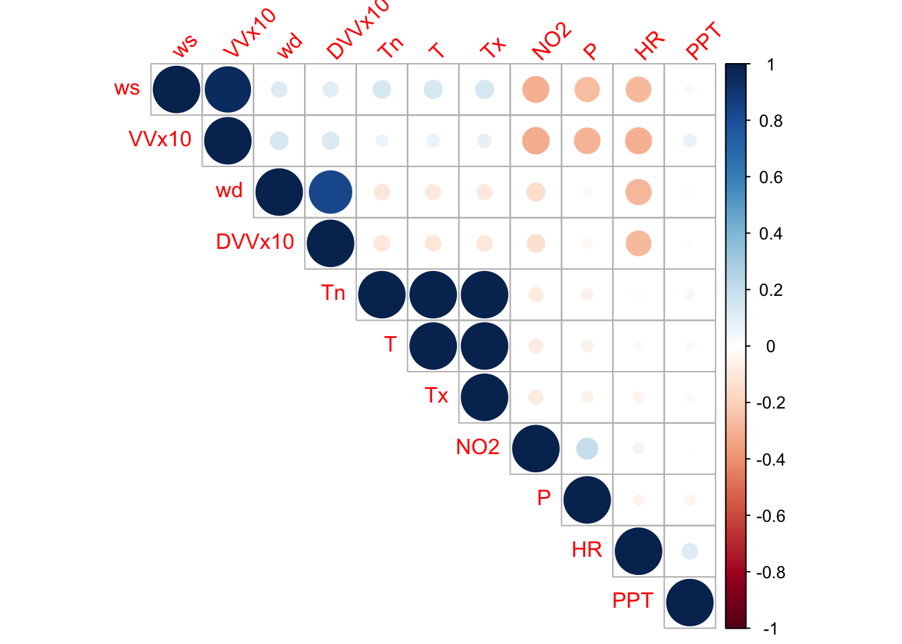
The correlation matrix plot for relationship between PM10 and weather:
corrplot(cormat_PM10, type="upper",order="hclust", tl.srt=45)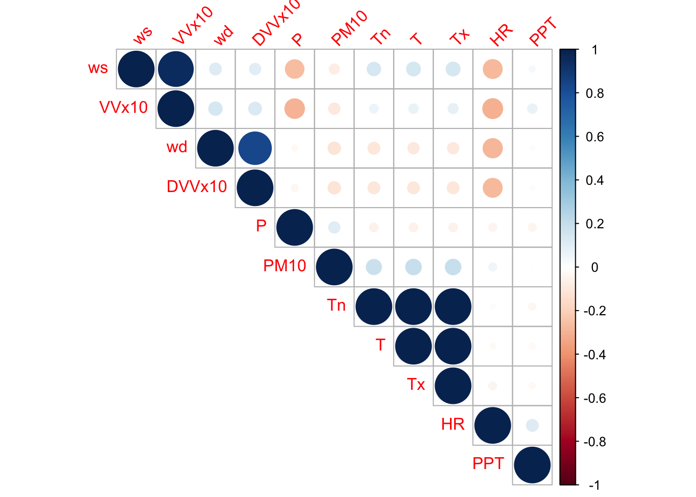
I will plot the most correlated variables, the NO2 pollution with Atmospheric pressure.
ggscatter(Eixample_NO2_weather_cor_NA, x = "NO2", y = "P",
add = "reg.line", conf.int = TRUE,
cor.coef = TRUE, cor.method = "pearson", alpha = 0.1,
xlab = "NO2 (µg/m3)", ylab = "Atmospheric pressure (hPa)", title = "NO2 vs P")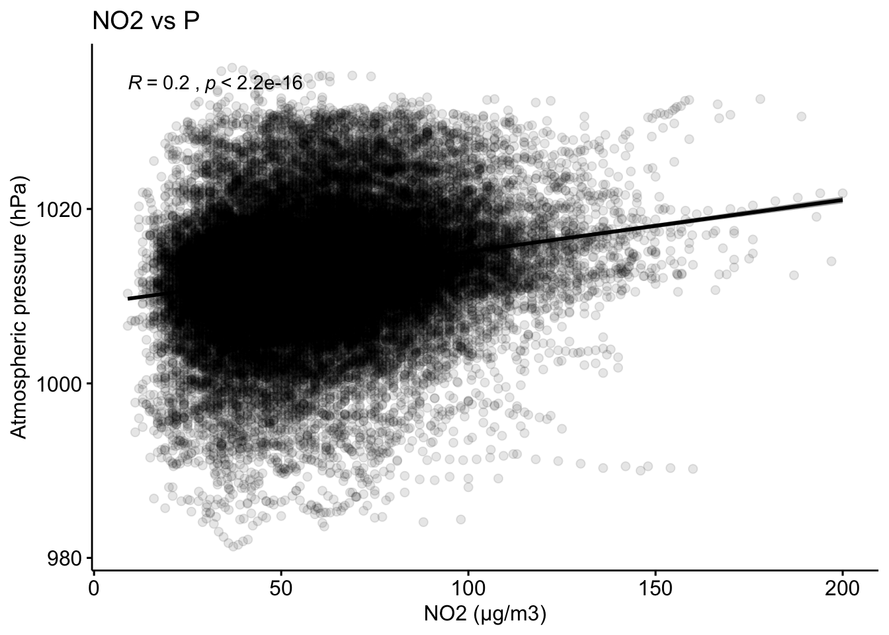
The higher the atmospheric pressure, the higher will be the NO2 concentration in the air. When there is anticyclone, winds are calmer therefore pollution is higher.
Let’a analyze the relationship between NO2 levels and Wind speed.
ggscatter(Eixample_NO2_weather_cor_NA, x = "NO2", y = "ws",
add = "reg.line", conf.int = TRUE,
cor.coef = TRUE, cor.method = "pearson", alpha = 0.1,
xlab = "NO2 (µg/m3)", ylab = "Wind speed (m/s)", title = "NO2 vs Wind speed")
The NO2 concentrations decrease with higher wind speeds.
For wind direction and NO2 relationship, I will use a windRose plot:
windRose(Eixample_NO2_weather_cor_NA, ws = "ws", wd = "wd")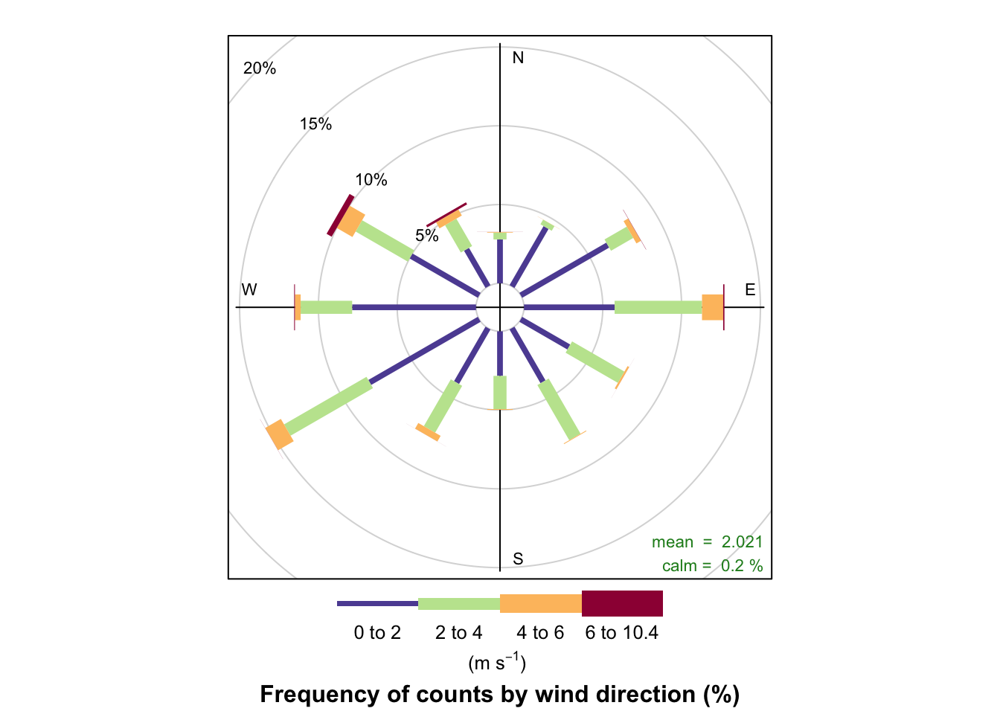
This plot tells us that the highest speed is normally NW direction winds, and 15% of the times the wind is SW.
percentileRose( mydata = Eixample_NO2_weather_cor_NA, wd = "wd", pollutant = "NO2", mean=TRUE, key.footer = "percentile")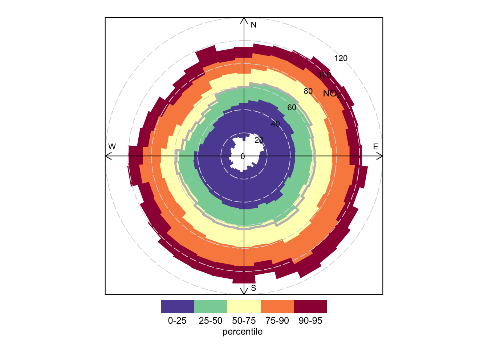
According to this graph, NO2 pollution is lowest when the wind is NW direction and higher speed. While when the wind is SE direction and low speed,the pollution is highest. This makes sense I understand this looking at the geography of the city, where the ocean sits south east of the city, and the pollution can scape that direction when the wind is NW. But when the wind is SE, the mountains hold the smog on top of the city.
I will do the same analysis for PM10. For PM10 the most influencing factor is Temperature.
ggscatter(Eixample_PM10_weather_cor_NA, x = "PM10", y = "T",
add = "reg.line", conf.int = TRUE,
cor.coef = TRUE, cor.method = "pearson", alpha = 0.1,
xlab = "PM10 (µg/m3)", ylab = "Temperature (°C)", title = "PM10 and T relationship in Eixample") +
xlim(c(0,200)) #taking out outliers
ggscatter(Eixample_PM10_weather_cor_NA, x = "PM10", y = "P",
add = "reg.line", conf.int = TRUE,
cor.coef = TRUE, cor.method = "pearson", alpha = 0.1,
xlab = "PM10 (µg/m3)", ylab = "Pressure (hPa)", title = "PM10 and P relationship in Eixample") +
xlim(c(0,200)) #taking out outliers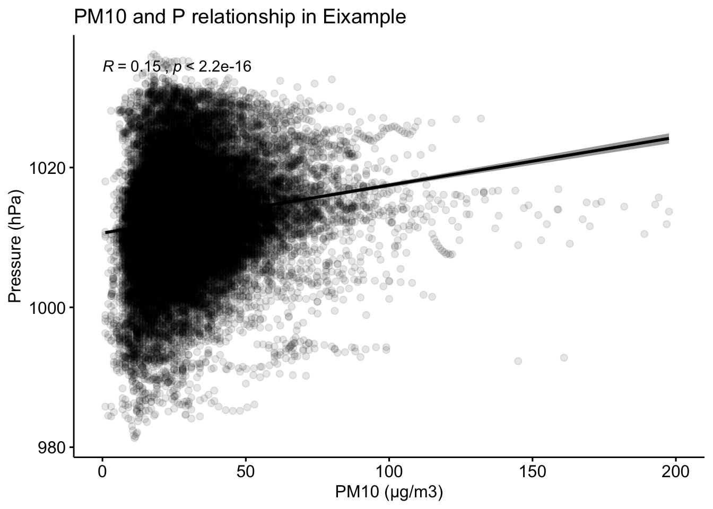
PM10 concentrations are higher with higher temperature and atmospheric pressure.
Regarding wind direction and PM10:
percentileRose( mydata = Eixample_PM10_weather_cor_NA, wd = "wd", pollutant = "PM10", mean=TRUE, key.footer = "percentile")
Very similar effect of the wind direction for NO2 and PM10. Pollution increases with SE wind direction and decreases with NW direction.
3.3 Health and pollution
I will now try to see if there is any relationship between NO2 and PM10 concentrations and hospitalizations due to respiratory and cardiac issues. I will load the dataset of hospitalizations due to respiratory issues first. The data is aggregated by diagnosis and CIM-9 code,and they are daily values registered in Barcelona city. Please load file “Respiratory_2014-2017.csv”.
health_resp <- read_csv('/Users/ione/Desktop/Project_AIR/data/Respiratory_2014-2017.csv', locale = locale(encoding = "latin1"))I will rename the column names:
health_resp <- health_resp %>% dplyr::rename(day="dia",
month= "mes",
year= "any",
Diagnosis = "Diagnòstic Principal",
Hospitalizations = "Contactes d'hospitalització d'aguts (altes AH)")
head(health_resp)## # A tibble: 6 x 6
## day month year Diagnosis `cim-9` Hospitalizations
## <dbl> <chr> <dbl> <chr> <dbl> <dbl>
## 1 1 Gener 2014 Nasofaringitis aguda [refreda… 460 1
## 2 1 Gener 2014 Amigdalitis aguda; NOS;fol·li… 463 1
## 3 1 Gener 2014 Pneumònia pneumocòccica [Estr… 481 1
## 4 1 Gener 2014 Pneumònia provocada per un mi… 486 14
## 5 2 Gener 2014 Abscés periamigdalí; abscés a… 475 1
## 6 2 Gener 2014 Pneumònia pneumocòccica [Estr… 481 3Month names are strings in catalan and the system can’t parse them into date format. I will translate the month names and transform into date format:
health_resp$month[health_resp$month == "Gener"] <- "January"
health_resp$month[health_resp$month == "Febrer"] <- "February"
health_resp$month[health_resp$month == "Març"] <- "March"
health_resp$month[health_resp$month == "Abril"] <- "April"
health_resp$month[health_resp$month == "Maig"] <- "May"
health_resp$month[health_resp$month == "Juny"] <- "June"
health_resp$month[health_resp$month == "Juliol"] <- "July"
health_resp$month[health_resp$month == "Agost"] <- "August"
health_resp$month[health_resp$month == "Setembre"] <- "September"
health_resp$month[health_resp$month == "Octubre"] <- "October"
health_resp$month[health_resp$month == "Novembre"] <- "November"
health_resp$month[health_resp$month == "Desembre"] <- "December"I will transform the year, month, day columns in a date format column called dt similarly to NO2 and PM10 dataframes.
health_resp$dt <- paste(health_resp$year, health_resp$month, health_resp$day, sep="-") %>% ymd() %>% as.Date()
Eixample_NO2_day$dt <- as.Date(Eixample_NO2_day$dt)
Eixample_PM10_day$dt <- as.Date(Eixample_PM10_day$dt)We only have health data from 2014 to 2018 so I will limit the pollution data accordingly.
Eixample_NO2_day <- Eixample_NO2_day %>% filter ( dt <= "2017-12-31")
Eixample_PM10_day <- Eixample_PM10_day %>% filter ( dt <= "2017-12-31")I will now perform the joins of the NO2 and PM10 with weather data:
Eixample_NO2_resp <- merge(Eixample_NO2_day,health_resp,by="dt" )
Eixample_PM10_resp <- merge(Eixample_PM10_day,health_resp,by="dt" )I am going to transform the data to perform correlation analysis. I need to aggregate the data by dt,but I need different aggregation types for each column: average for NO2/PM10 and summmation for hospitalizations count.
df_NO2 <- data.table(Eixample_NO2_resp)
df.NO2_resp <- df_NO2[, list(NO2=mean(mean), Hospitalizations_resp=sum(Hospitalizations)),
by=dt]
df.NO2_resp## dt NO2 Hospitalizations_resp
## 1: 2014-01-01 52.13043 38
## 2: 2014-01-02 86.39583 74
## 3: 2014-01-03 79.27083 61
## 4: 2014-01-04 42.18750 48
## 5: 2014-01-05 24.93750 36
## ---
## 1456: 2017-12-26 49.14583 42
## 1457: 2017-12-27 37.54167 53
## 1458: 2017-12-28 61.68750 39
## 1459: 2017-12-29 72.54167 27
## 1460: 2017-12-30 56.47917 17df_PM10 <- data.table(Eixample_PM10_resp)
df_PM10_resp <- df_PM10[, list(PM10=mean(mean), Hospitalizations_resp=sum(Hospitalizations)),
by=dt]
df_PM10_resp## dt PM10 Hospitalizations_resp
## 1: 2014-01-01 20.04348 38
## 2: 2014-01-02 37.72917 74
## 3: 2014-01-03 40.41667 61
## 4: 2014-01-04 20.85417 48
## 5: 2014-01-05 10.45833 36
## ---
## 1456: 2017-12-26 13.95833 42
## 1457: 2017-12-27 18.22917 53
## 1458: 2017-12-28 17.95833 39
## 1459: 2017-12-29 26.39583 27
## 1460: 2017-12-30 25.95833 17I am going to do a normality test for pearson correlation tests: Shapiro-Wilk normality test for NO2
shapiro.test(df.NO2_resp$NO2) ##
## Shapiro-Wilk normality test
##
## data: df.NO2_resp$NO2
## W = 0.97615, p-value = 7.869e-15Shapiro-Wilk normality test for Hospitalizations
shapiro.test(df.NO2_resp$Hospitalizations_resp) ##
## Shapiro-Wilk normality test
##
## data: df.NO2_resp$Hospitalizations_resp
## W = 0.98142, p-value = 8.661e-13Pearson correlation test between NO2 and hospitalizations due to respiratory issues:
cor_test1 <- cor.test(df.NO2_resp$NO2, df.NO2_resp$Hospitalizations_resp,
method = "pearson")
cor_test1##
## Pearson's product-moment correlation
##
## data: df.NO2_resp$NO2 and df.NO2_resp$Hospitalizations_resp
## t = 17.656, df = 1458, p-value < 2.2e-16
## alternative hypothesis: true correlation is not equal to 0
## 95 percent confidence interval:
## 0.3765017 0.4610722
## sample estimates:
## cor
## 0.4196974Correlation coefficient is around 0.42 which is a considerable correlation. Plot NO2 vs hospitalizations:
ggscatter(df.NO2_resp, x = "NO2", y = "Hospitalizations_resp",
add = "reg.line", conf.int = TRUE,
cor.coef = TRUE, cor.method = "pearson", alpha = 0.1,
xlab = "NO2 (µg/m3)", ylab = "Hospitalizations", title = "NO2 vs hospitalizations respiratory issues")
I will plot NO2 and hospitalizations with the temporal component:
ggplot(df.NO2_resp, aes(x =dt)) +
geom_line(aes(y = NO2, colour = "NO2")) +
coord_cartesian(xlim=c(as.Date("2014-01-01"),as.Date("2014-01-16"))) +
geom_line(aes(y = Hospitalizations_resp, colour = "Hospitalizations")) +
labs( x = "Time", y = "Hospitalizations", title = "NO2(µg/m3) - Respiratory issues in Eixample - week") +
scale_x_date(date_breaks = "2 days", date_labels = "%d-%b")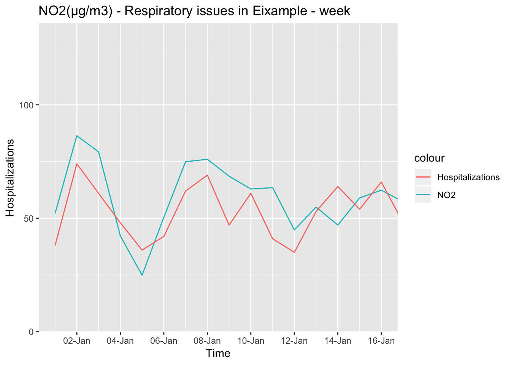
Now I will perform Pearson correlation test for PM10:
cor_test2 <- cor.test(df_PM10_resp$PM10, df_PM10_resp$Hospitalizations_resp,
method = "pearson")
cor_test2##
## Pearson's product-moment correlation
##
## data: df_PM10_resp$PM10 and df_PM10_resp$Hospitalizations_resp
## t = 0.96423, df = 1458, p-value = 0.3351
## alternative hypothesis: true correlation is not equal to 0
## 95 percent confidence interval:
## -0.02609173 0.07644766
## sample estimates:
## cor
## 0.02524436Correlation coeficcient is 0.025, which is extremely low. My hypothesis is that the outliers are corrupting the result.
I will calculate a robust covariance matrix between PM10 and respiration issues, and compare it with a classic covariance matrix:
cov_PM10_resp_classic <- covClassic(cbind(df_PM10_resp$PM10,df_PM10_resp$Hospitalizations_resp), corr = TRUE)
cov_PM10_resp_classic ## Call:
## covClassic(data = cbind(df_PM10_resp$PM10, df_PM10_resp$Hospitalizations_resp),
## corr = TRUE)
##
## Classical Estimate of Correlation:
## V1 V2
## V1 1.00000 0.02524
## V2 0.02524 1.00000
##
## Classical Estimate of Location:
## V1 V2
## 31.36 35.44cov_PM10_resp_rob <- covRob(cbind(df_PM10_resp$PM10,df_PM10_resp$Hospitalizations_resp), corr = TRUE)
cov_PM10_resp_rob## Call:
## covRob(data = cbind(df_PM10_resp$PM10, df_PM10_resp$Hospitalizations_resp),
## corr = TRUE)
##
## Robust Estimate of Correlation:
## V1 V2
## V1 1.00000 0.09628
## V2 0.09628 1.00000
##
## Robust Estimate of Location:
## V1 V2
## 29.22 33.97I will plot both covariance matrixes:
plot(cov_PM10_resp_classic)

plot(cov_PM10_resp_rob)

Therefore according to the data, the relationship between PM10 and hospitalizations for respiratory issues is weakly correlated. But this is not what other studies reflect, so there must be some other fact that I am missing.
I am going to do the same analysis for hospitalizations related to heart diseases. Please load file “Heart_2014-2017.csv”.
health_heart <- read_csv('/Users/ione/Desktop/Project_AIR/data/Heart_2014-2017.csv', locale = locale(encoding = "latin1"))I will rename the column names
health_heart <- health_heart %>% dplyr::rename(day="dia",
month= "mes",
year= "any",
Diagnosis = "Diagnòstic Principal",
Hospitalizations = "Contactes d'hospitalització d'aguts (altes AH)")I translate all values of month from catalan to english:
health_heart$month[health_heart$month == "Gener"] <- "January"
health_heart$month[health_heart$month == "Febrer"] <- "February"
health_heart$month[health_heart$month == "Març"] <- "March"
health_heart$month[health_heart$month == "Abril"] <- "April"
health_heart$month[health_heart$month == "Maig"] <- "May"
health_heart$month[health_heart$month == "Juny"] <- "June"
health_heart$month[health_heart$month == "Juliol"] <- "July"
health_heart$month[health_heart$month == "Agost"] <- "August"
health_heart$month[health_heart$month == "Setembre"] <- "September"
health_heart$month[health_heart$month == "Octubre"] <- "October"
health_heart$month[health_heart$month == "Novembre"] <- "November"
health_heart$month[health_heart$month == "Desembre"] <- "December"health_heart$dt <- paste(health_heart$year, health_heart$month, health_heart$day, sep="-") %>% ymd() %>% as.Date()Eixample_NO2_heart <- merge(Eixample_NO2_day,health_heart,by="dt" )
Eixample_PM10_heart <- merge(Eixample_PM10_day,health_heart,by="dt" )I am now going to aggregate data,avg for NO2 and sum for hospitalizations:
df_NO2_1 <- data.table(Eixample_NO2_heart)
df_NO2_heart <- df_NO2_1[, list(NO2=mean(mean), Hospitalizations_heart=sum(Hospitalizations)),
by=dt]
df_NO2_heart## dt NO2 Hospitalizations_heart
## 1: 2014-01-01 52.13043 27
## 2: 2014-01-02 86.39583 51
## 3: 2014-01-03 79.27083 47
## 4: 2014-01-04 42.18750 44
## 5: 2014-01-05 24.93750 37
## ---
## 1457: 2017-12-27 37.54167 24
## 1458: 2017-12-28 61.68750 24
## 1459: 2017-12-29 72.54167 13
## 1460: 2017-12-30 56.47917 6
## 1461: 2017-12-31 47.93617 1df_PM10_1 <- data.table(Eixample_PM10_heart)
df_PM10_heart <- df_PM10_1[, list(PM10=mean(mean), Hospitalizations_heart=sum(Hospitalizations)),
by=dt]
df_PM10_heart## dt PM10 Hospitalizations_heart
## 1: 2014-01-01 20.04348 27
## 2: 2014-01-02 37.72917 51
## 3: 2014-01-03 40.41667 47
## 4: 2014-01-04 20.85417 44
## 5: 2014-01-05 10.45833 37
## ---
## 1457: 2017-12-27 18.22917 24
## 1458: 2017-12-28 17.95833 24
## 1459: 2017-12-29 26.39583 13
## 1460: 2017-12-30 25.95833 6
## 1461: 2017-12-31 20.12766 1Now I will perform the Pearson correlation test between NO2, PM10 and hospitalizations caused by heart issues:
cor_NO2_heart <- cor.test(df_NO2_heart$NO2, df_NO2_heart$Hospitalizations_heart,
method = "pearson")
cor_NO2_heart##
## Pearson's product-moment correlation
##
## data: df_NO2_heart$NO2 and df_NO2_heart$Hospitalizations_heart
## t = 22.073, df = 1459, p-value < 2.2e-16
## alternative hypothesis: true correlation is not equal to 0
## 95 percent confidence interval:
## 0.4608750 0.5378185
## sample estimates:
## cor
## 0.5003339The correlation coefficient between NO2 and heart issues is 0.50, which is significant.
cor_PM10_heart <- cor.test(df_PM10_heart$PM10, df_PM10_heart$Hospitalizations_heart,
method = "pearson")
cor_PM10_heart##
## Pearson's product-moment correlation
##
## data: df_PM10_heart$PM10 and df_PM10_heart$Hospitalizations_heart
## t = 4.8236, df = 1459, p-value = 1.558e-06
## alternative hypothesis: true correlation is not equal to 0
## 95 percent confidence interval:
## 0.07448119 0.17544481
## sample estimates:
## cor
## 0.1252874The cor coef between PM10 and heart issues is just 0.125, which is quite weak.
If I plot hospitalizations vs NO2 concentrations, there is some positive relationship:
ggscatter(df_NO2_heart, x = "NO2", y = "Hospitalizations_heart",
add = "reg.line",
conf.int = TRUE,
add.params = list(color = "blue",
fill = "lightgray") ) +
stat_cor(method = "pearson", label.x = 3, label.y = 65) # Add correlation coefficient
For PM10 in the contrary the relationship is not clear when plotting, probably due to the outliers.
ggscatter(df_PM10_heart, x = "PM10", y = "Hospitalizations_heart",
add = "reg.line",
conf.int = TRUE,
add.params = list(color = "blue",
fill = "lightgray") ) +
stat_cor(method = "pearson", label.x = 3, label.y = 100)
I will try to do the correlation analysis for PM10 with a robust analytical covariance method so that the effect of the outliers is reduced.
cov_PM10_heart_classic <- covClassic(cbind(df_PM10_heart$PM10,df_PM10_heart$Hospitalizations_heart), corr = TRUE)
cov_PM10_heart_classic## Call:
## covClassic(data = cbind(df_PM10_heart$PM10, df_PM10_heart$Hospitalizations_heart),
## corr = TRUE)
##
## Classical Estimate of Correlation:
## V1 V2
## V1 1.0000 0.1253
## V2 0.1253 1.0000
##
## Classical Estimate of Location:
## V1 V2
## 31.35 42.32cov_PM10_heart_rob <- covRob(cbind(df_PM10_heart$PM10,df_PM10_heart$Hospitalizations_heart), corr = TRUE)
cov_PM10_heart_rob## Call:
## covRob(data = cbind(df_PM10_heart$PM10, df_PM10_heart$Hospitalizations_heart),
## corr = TRUE)
##
## Robust Estimate of Correlation:
## V1 V2
## V1 1.0000 0.2404
## V2 0.2404 1.0000
##
## Robust Estimate of Location:
## V1 V2
## 29.08 41.45With the robust method the covariance is up to 0.24.If I plot both the classic and the robust:
plot(cov_PM10_heart_classic)

plot(cov_PM10_heart_rob) 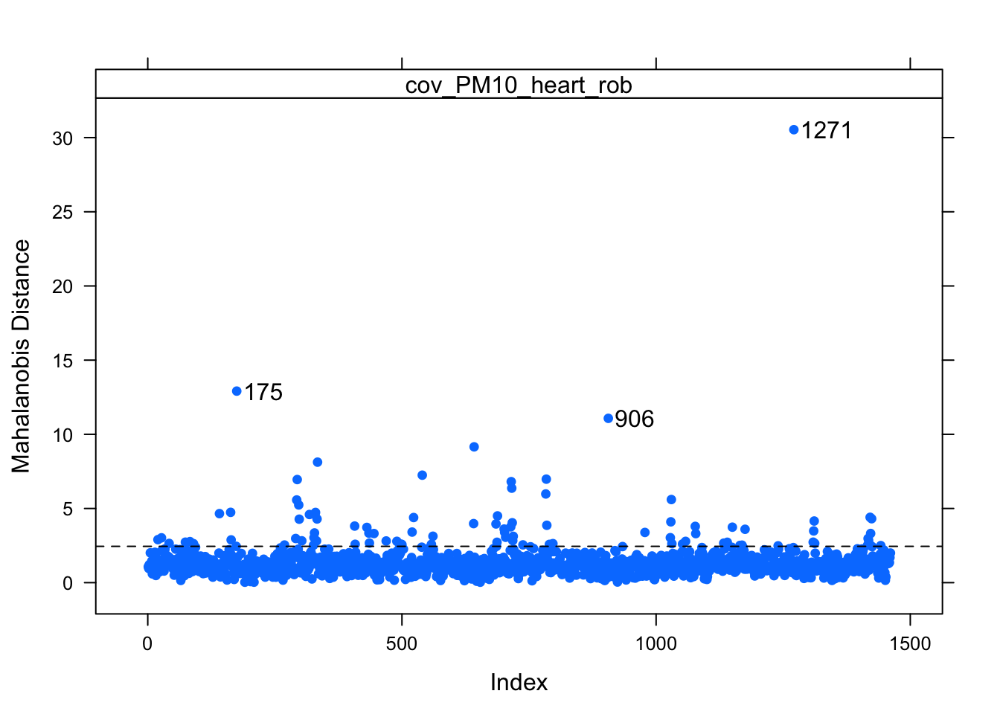
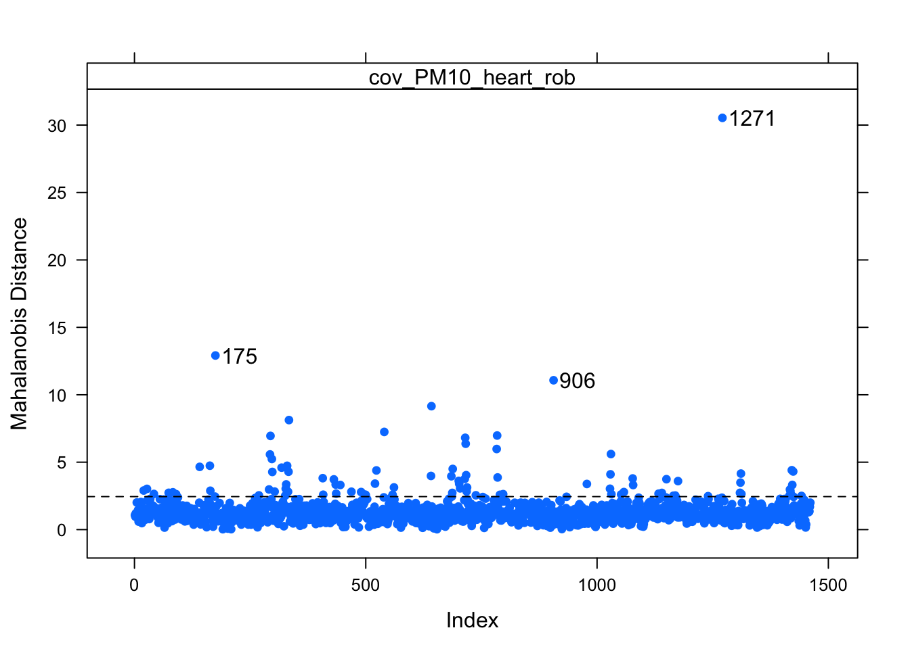
Between NO2 and hospitalizations due to respiratory issues there is some positive relationship with correlation coefficient of 0.42, and between NO2 and hospitalizations due to heart problems is moderate with a correlation coefficient of 0.5.
But PM10 and hospitalizations with respiratory problems are weakly linked with a correlation of 0.1, and PM10 and hospitalizations due to heart problems are linked with a correlation of 0.24.